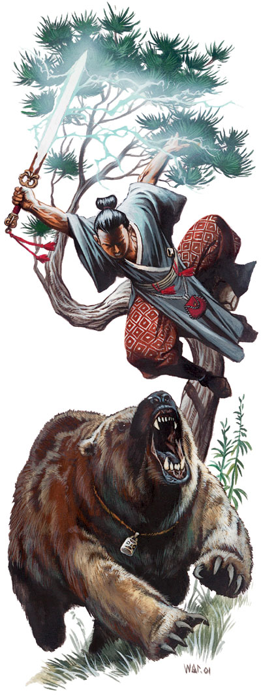

图：Bear warrior(下)和Blade dancer(上)
某些东方世界的人尊崇熊为战士力量和战斗能量的标记。他们采用熊的形象作为图腾，希望藉此获得熊的力量。熊战士经由与熊的灵魂之间的特别关联，他们真实地在战斗的狂暴中得到熊的力量，实际上，是在战斗中化为熊的外型。
只有那些已经能够释放精神上的狂暴或愤怒力量的人才能增强这样的力量成为熊战士。绝大多数的熊战士是野蛮人，sohei有时也会成为熊战士。少数在其它进阶职业中得到狂暴能力的角色（例如僧伽游侠）有时也会成为熊战士。熊战士不存在于Rokugan。
NPC熊战士通常是野蛮人部落、朴素小村或武士宗庙的护卫者。他们领导其它的战士，虽然那些战士不完全训练有素而守记律，但是受到令人鼓舞的模范感召，他们战斗。
生命骰：d12
需求
Base Attack Bonus: +7
Feats: Power Attack
Special: Rage, Fury, or Ki Frenzy ability
职业技能
Animal Empathy(Cha, exclusive skill), CLimb(Str), Handle Animal(Cha), Intimidate(Cha), Intuit Direction(Wis), Jump(Str), Listen(Wis), Ride(Dex), Swim(Str), Wilderness Lore(Wis)
Skill Points: 4+int mod
职业能力
武器和护甲熟悉：熊战士熟悉所有的所有的简易和军用武器。他们不熟悉任何护甲和盾。
熊形（Ｓｐ）：熊战士可以在狂暴时(Rage, Fury, or Ki Frenzy)变身为熊。一级起，熊战士可以在他的整个狂暴过程中，以黑熊的形体战斗，一天一次。这种能力和「变形自己」（Polymorph Self）这个法术类似，除了熊战士是变身为特定的熊。他的力量＋８，敏捷＋２，体质＋４（这些数值取代原本的狂暴能力加值）。如同狂暴，他从体质加值得到暂时生命值，并且得到＋２自然防御力加值。当他狂暴时，依然得到＋２意志豁免检定加值，并且得到－２ＡＣ罚值。他可以用他完整的攻击加值做两爪攻击，每只爪造成１ｄ４伤害，并且加上新的力量修正加值。咬囓的攻击加值得到－５修正，造成１ｄ６伤害和一半的力量（新的）修正值。如同「变形自己」法术，在变形期间，他的武器、护甲和其它装备都化为身体的一部份并失去作用。（除了某些被设计来跨越这种限制的物品。）
四级起，熊战士可以在他的整个狂暴过程中，以熊的形体战斗，一天两次，并且能选择以黑熊或棕熊的体形战斗。化身为棕熊形态时，他的力量＋１６，敏捷＋２，体质＋８。他得到＋５自然防御力加值，并且成为大形体形生物（受到－１ＡＣ和攻击检定）。他的两爪攻击每只爪造成１ｄ８伤害加上新的力量修正加值，咬囓造成２ｄ８伤害和一半的力量修正。他得到进阶擒拿的额外能力（当他的只爪击中目标时可以使用）。他的面宽成为５呎乘１０呎。
八级起，熊战士可以在他的整个狂暴过程中，以熊的形体战斗，一天两次，并且能选择以黑熊、棕熊或狂暴熊的体形战斗。化身为狂暴熊形态时，他的力量＋２０，敏捷＋２，体质＋８。他得到＋７自然防御力加值，并且成为大形体形生物。他的两爪攻击每只爪造成２ｄ４伤害加上新的力量修正加值，咬囓造成２ｄ８伤害和一半的力量修正。他得到进阶擒拿的额外能力（当他的只爪击中目标时可以使用）。他的面宽成为１０呎乘２０呎，触及触围为１０呎。
嗅觉（Ｅｘ）：三级起，熊战士得到嗅觉能力。他可以用一个自由动作以嗅觉侦查敌人，一般来说范围是半径３０呎。若是目标在上风处，嗅觉距离是６０呎。若是目标在下风处，嗅觉距离是１５呎。熊战士可以察觉到强烈的气味，像是烟或腐败的垃圾，嗅觉距离加倍。更强烈的像是臭鼬、麝香、恶臭，嗅觉距离乘三倍。
熊战士侦查的是目标的存在与否，而不是测出确切位置。察觉出目标的位置是等量移动动作。如果他移近目标５呎，他就能精确指出目标的位置。
熊战士可以做智慧检定以沿着气味追迹。一般新近痕迹的ＤＣ是１０。ＤＣ的难度因猎物的气味、生物的数量、痕迹的新旧而增减。每小时气味都会减弱，ＤＣ＋２。其它的规则则参见追迹。以嗅觉追迹的熊战士忽略地表状况和视线状况。
熊战士可以如同人类的视觉一般分辨出熟悉的气味。水，尤其是流水，会消抹气味。
伪造的、强烈的气味会轻易地掩盖过其它气味。这种强烈气味的存在会完全破坏察觉和分辨气味的能力。而基本的野外求生检定ＤＣ也从１０上升到２０。
额外狂暴：五级和十级时，每日的狂暴次数可以多加一次。例如，一个七级野蛮人兼五级熊战士一天可以使用狂暴能力三次，七级野蛮人兼十级熊战士一天可以狂暴四次。同样的角色若是增加一次野蛮人职业等级，他一天可以使用狂暴能力五次。
等级 基本攻 豁 免 检 定 特殊能力
击加成 坚忍 反射 意志
１ ＋１ ＋２ ＋０ ＋２ 熊形（黑）一天一次
２ ＋２ ＋３ ＋０ ＋３
３ ＋３ ＋３ ＋１ ＋３ 嗅觉
４ ＋４ ＋４ ＋１ ＋４ 熊形（棕）一天两次
５ ＋５ ＋４ ＋１ ＋４ 额外狂暴
６ ＋６ ＋５ ＋２ ＋５
７ ＋７ ＋５ ＋２ ＋５
８ ＋８ ＋６ ＋２ ＋６ 熊形（狂暴）一天三次
９ ＋９ ＋６ ＋３ ＋６
１０ ＋１０ ＋７ ＋３ ＋７ 额外狂暴